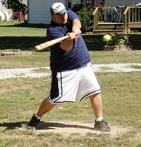
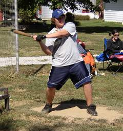
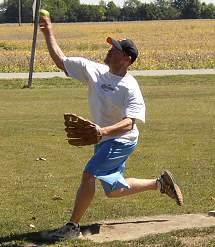
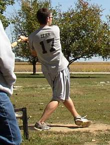
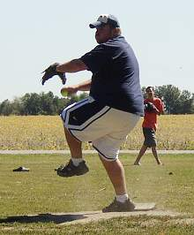
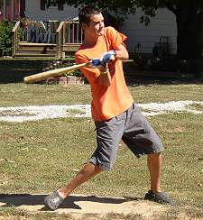
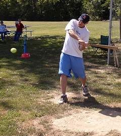
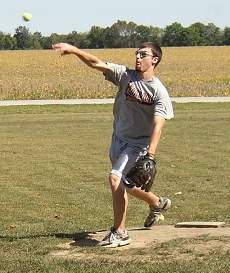
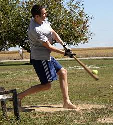
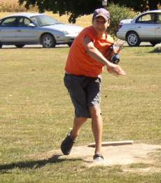

Paul Alf went 8-for-27 with a homerun and 3 RBI in his annual trip to Corklestick Park. |

Evan Woodard homered in both games of the doubleheader while going 6-for-24 with 3 RBI and 3 runs scored. |

Kevin Ryan picked up the win in game number one allowing 5 runs on 15 hits. He also struck out 4. |

Aaron Zehr made his chair baseball debut and finished 7-for-23 with 2 homeruns, 4 RBI and 3 runs scored. |

Paul Alf suffered the loss in the first game despite allowing just 2 earned runs and 8 hits. 4 unearned runs in the 5th inning helped lead to the defeat. |

Tad Goldman had a pair of singles and scored twice in the doublheader. |

Kevin Ryan won the first game of the day with a walk-off homer. He was 7-for-22 with 2 homeruns, 3 RBI and 5 runs. |

Aaron Zehr picked up the first win of his career in game number two. He allowed just 4 runs (3 earned) on 8 hits and struck out 2. |

Patrick Cork went 13-for-26 with 2 doubles, 2 triples, 3 homeruns and 6 RBI in the doubleheader in a pair of losses. |

Tad Goldman took the loss in game number two, allowing 5 runs (1 earned) on 13 hits. He struck out 10 in the defeat. |
|
|